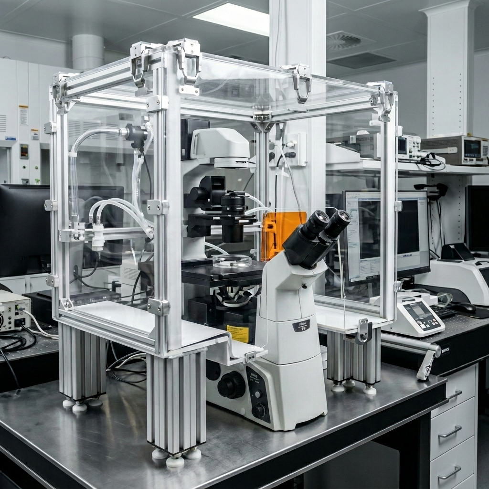

Project Gallery
A curated archive of projects across AI software, biomedical instrumentation, microfluidics, and aircraft systems.
Sec-01
Software & AI Projects
Sec-02
Biomedical Instrumentation

Automated Hydrogel Dispensing System
High-precision dispensing system for automating manual 3D cell culture testing workflows.

Environmental Chamber for Live Cell Imaging Research
Custom control system for maintaining temperature and CO2 parameters for live cell imaging.

PDMS Microfluidic Probe Heads
Design and fabrication of microfluidic interfaces for localized drug delivery in organ-on-chip models.
Anodic Bonding Station
Safety-focused high voltage and heat fixture for microfluidic device fabrication.
Sec-03